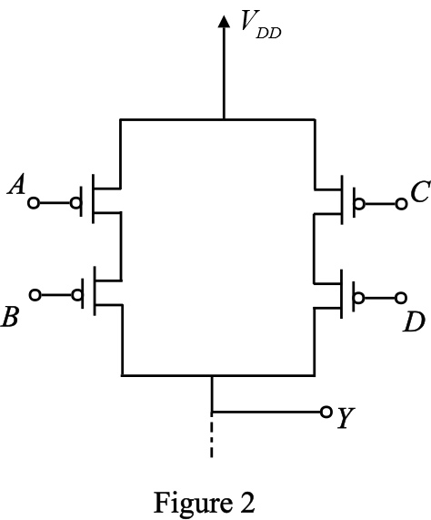
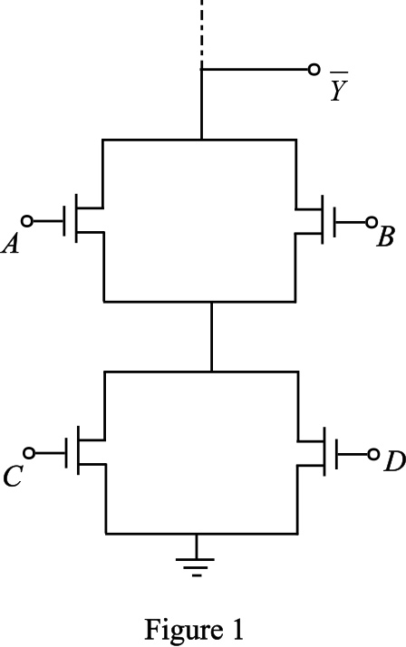
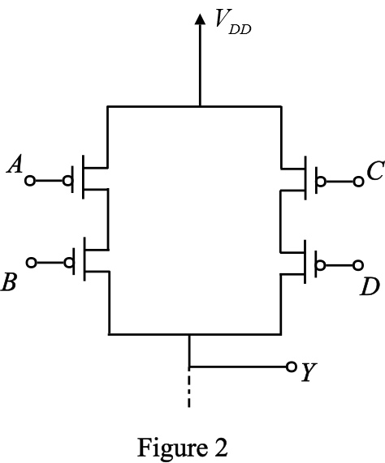
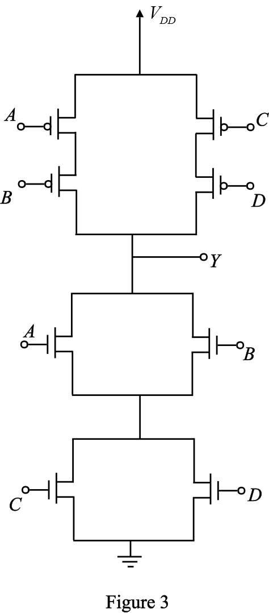

Consider the following logic function:
Use PMOS transistors to draw the pull up network for the logic function  as shown in Figure 2.
as shown in Figure 2.

The CMOS logic gate is the combination of pull up network (PUN) and pull down network (PDN). The PUN comprises PMOS transistors, and the PDN comprises NMOS transistors.
The PMOS transistor conducts when the input signal at its gate is low, and the NMOS transistor conducts when the input signal at its gate is high.
In the CMOS gate circuit, the PDN and the PUN are dual networks where series branch exist in one, a parallel branch exists in other.
Consider the following logic function:
Complement the function Y to get .
Use NMOS transistors to draw the pull-down network for the logic function as shown in Figure 1.

Consider the following logic function:
Use PMOS transistors to draw the pull up network for the logic function as shown in Figure 2.


Thus, the CMOS realization for the logic function is sketched as shown in Figure 3.